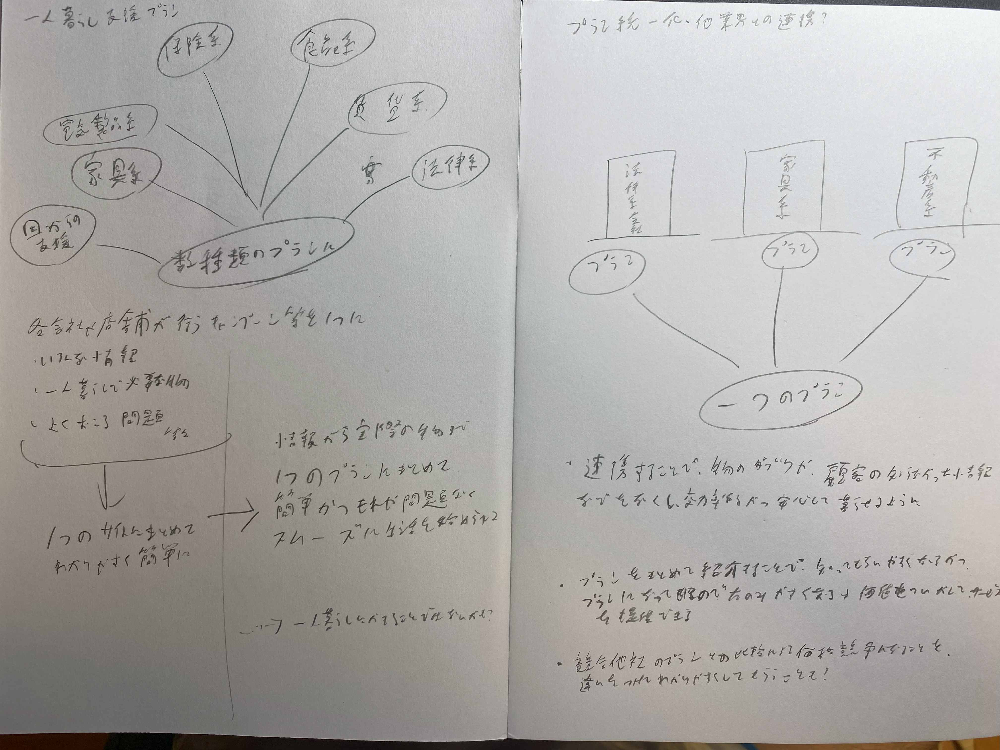
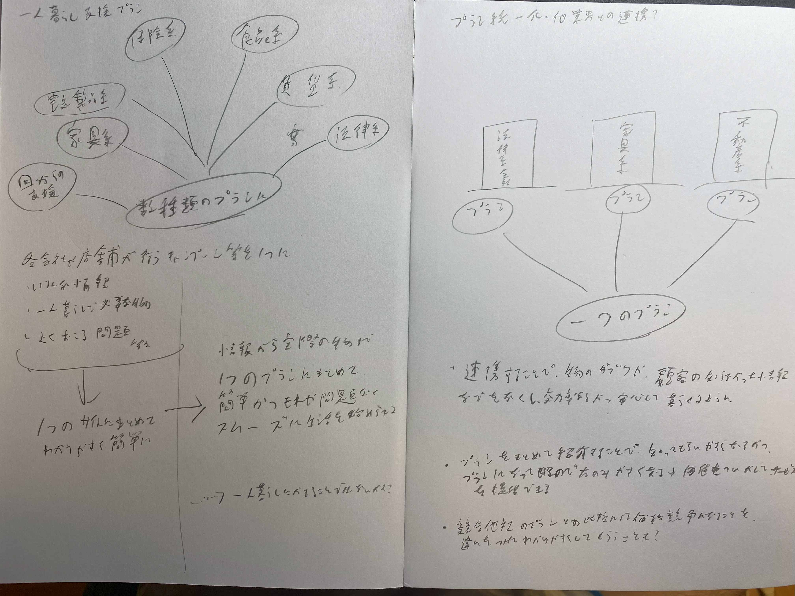
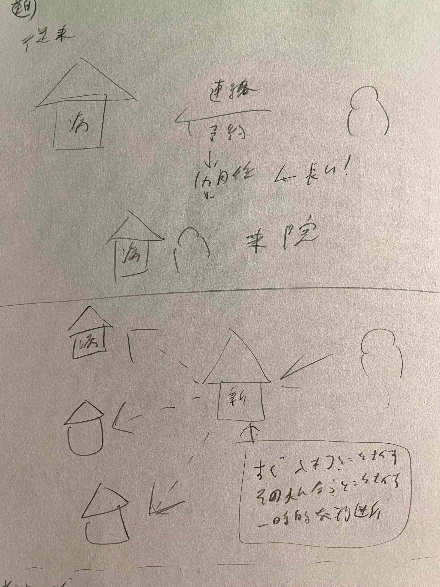
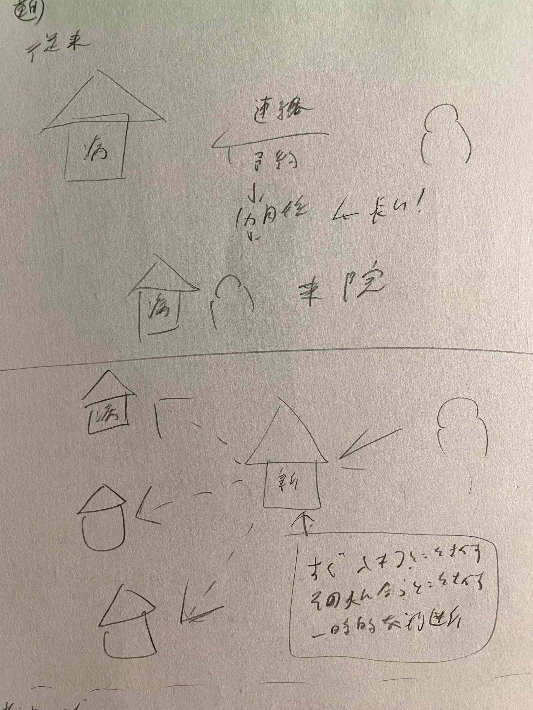
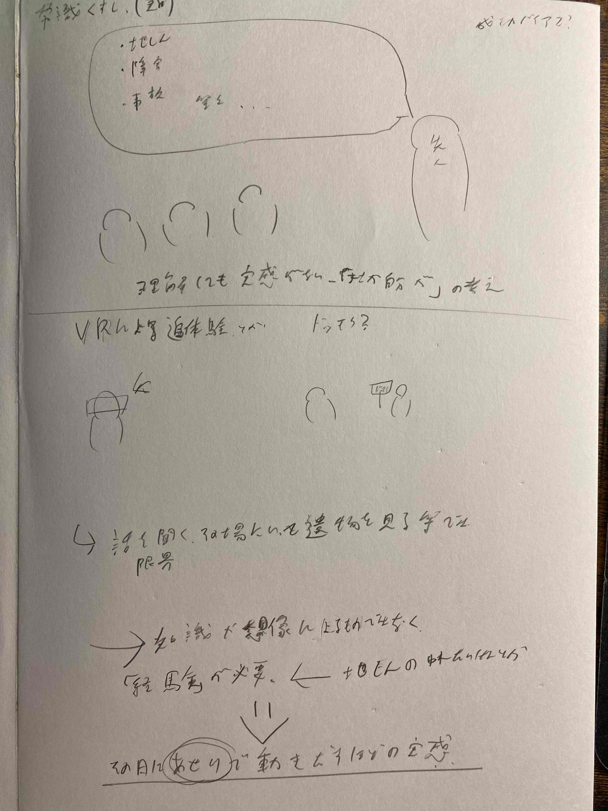
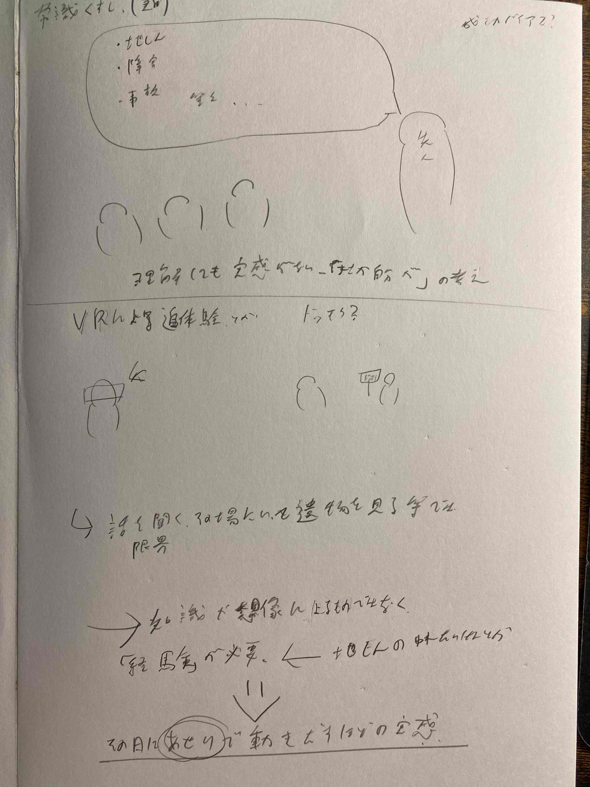

１．簡単一括セット
新しく一人暮らしを始めたり、引っ越しをしたりする際に家具はもちろん住居や小道具、家電、食品、保険といったもろもろを
個別でいろいろな情報を調べて用意するのは面倒
加えて一人暮らしを始めてから起きる問題（風を引いたときに薬といったものを用意していなかったとか）もあるため大変
もちろん親や親しい人から情報を貰いながら対応していくものではありそうだがそれでもやることが多そう
そのためそれらの情報から物品・困ったときの対応までしてくれる一括プランがあれば便利そうだと考えた

自分自身は実家暮らしなのでそこまでの実感はないが、よく新社会人のためのスーツや家具のセールが良くされているのを見るが
すべて一括でそろうようなものを見たことがなかったので考えてみた
上の例では一人暮らしだが、
中学・高校でも必要なものをそれぞれの店を回っていたりするので新生活を始めるときにあるとよいと考えた
個別でいろいろな情報を調べて用意するのは面倒
加えて一人暮らしを始めてから起きる問題（風を引いたときに薬といったものを用意していなかったとか）もあるため大変
もちろん親や親しい人から情報を貰いながら対応していくものではありそうだがそれでもやることが多そう
そのためそれらの情報から物品・困ったときの対応までしてくれる一括プランがあれば便利そうだと考えた

自分自身は実家暮らしなのでそこまでの実感はないが、よく新社会人のためのスーツや家具のセールが良くされているのを見るが
すべて一括でそろうようなものを見たことがなかったので考えてみた
上の例では一人暮らしだが、
中学・高校でも必要なものをそれぞれの店を回っていたりするので新生活を始めるときにあるとよいと考えた
２．簡単心療
心療内科の病院では予約が取りにくく、予約が取れても一か月以上後といったことも珍しくない
そのうえで、心療内科では精神面での治療になるため病院との相性も大事となるため
せっかく予約を取ったのに相性が悪くて通院ができないといった問題も起こる
そこで一時的にはじめて心療内科に行く人が先に訪れてその人の症状の確認や相性等を考えて通えそうな病院を
割り当てるいわば「初診だけ行く病院」があれば予約に悩まされることなく、迅速に治療を始めるとこができると考えた

そのうえで、心療内科では精神面での治療になるため病院との相性も大事となるため
せっかく予約を取ったのに相性が悪くて通院ができないといった問題も起こる
そこで一時的にはじめて心療内科に行く人が先に訪れてその人の症状の確認や相性等を考えて通えそうな病院を
割り当てるいわば「初診だけ行く病院」があれば予約に悩まされることなく、迅速に治療を始めるとこができると考えた

３．常識崩し
よく地震や事故、もしくは障害や貧困といったものの話について子供のころによく聞かされた
地震や事故に関しては特に事前に準備したり、気を付けるように言われると思われる
しかし、どれだけその話を聞いた人が真剣にそのことについて考えていても心の中では
「そんなことは多分起こらないだろう」と無意識に思ってしまっている可能性がある
また地震のようにその人自身にもとから経験があったり、地震体験装置（部屋全体を揺らす機器）等で
体験したりすることができるものならば多少は実体験ができるが、世代間・性別間のギャップや精神障害者の苦悩といった
ものはその人自身にでもならない限り実体験することは難しい
そこでVRと専用の部屋等によって「参考になった」というレベルではなく「焦りがでた」と思うレベルの実体験を
できるようにすることによって他者理解や重要性の理解をしやすくなるようなものがあればよいと考えた

地震や事故に関しては特に事前に準備したり、気を付けるように言われると思われる
しかし、どれだけその話を聞いた人が真剣にそのことについて考えていても心の中では
「そんなことは多分起こらないだろう」と無意識に思ってしまっている可能性がある
また地震のようにその人自身にもとから経験があったり、地震体験装置（部屋全体を揺らす機器）等で
体験したりすることができるものならば多少は実体験ができるが、世代間・性別間のギャップや精神障害者の苦悩といった
ものはその人自身にでもならない限り実体験することは難しい
そこでVRと専用の部屋等によって「参考になった」というレベルではなく「焦りがでた」と思うレベルの実体験を
できるようにすることによって他者理解や重要性の理解をしやすくなるようなものがあればよいと考えた
